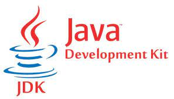
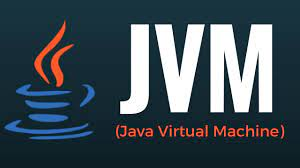

Java Development Kit(JDK)
October 2, 2023, by Lloyd Allen

The Java Development Kit (JDK) is a comprehensive software development package provided by
Oracle Corporation for building, compiling, and running Java applications. It encompasses a
suite of tools, including compilers, debuggers, and various utilities essential for Java
development. One of the central components of the JDK is the Java Virtual Machine (JVM),
which is responsible for executing Java applications. Additionally, the JDK includes the
Java Class Library, an extensive collection of pre-written code that developers can leverage
to expedite the process of application development. This toolkit equips developers with
everything they need to create robust, platform-independent Java applications.
Furthermore, the JDK plays a pivotal role in the software development lifecycle. It allows
developers to write code, compile it into Java bytecode, and then execute it on any platform
that has a compatible JVM. This portability is a hallmark of Java's "Write Once, Run Anywhere"
(WORA) philosophy. Beyond its core features, the JDK is regularly updated with the latest
advancements, ensuring that developers have access to the most up-to-date tools and technologies
for their Java projects. Overall, the JDK stands as an indispensable resource for Java developers,
enabling them to create powerful, cross-platform applications efficiently.
Java Virtual Machine(JVM)
October 2, 2023, by Lloyd Allen

The Java Virtual Machine (JVM) serves as the cornerstone of Java's platform independence. It acts
as an intermediary between compiled Java source code and the underlying hardware and operating system.
The JVM is responsible for interpreting or Just-In-Time (JIT) compiling Java bytecode into native
machine code, allowing Java applications to run on diverse environments seamlessly. This crucial
layer of abstraction shields developers from the intricacies of different platforms, enabling them
to write code once and deploy it across various devices and operating systems. Furthermore, the JVM
provides a robust execution environment, complete with memory management and garbage collection,
ensuring efficient utilization of system resources.
In addition to its role in executing Java applications, the JVM offers a fertile ground for innovation
and experimentation in the world of programming languages. Many non-Java languages, like Scala, Kotlin,
and Groovy, have been designed to run on the JVM, capitalizing on its mature ecosystem and performance
capabilities. This versatility transforms the JVM into a versatile platform that supports an array of
languages, expanding its reach beyond the realm of Java development. The JVM's ability to balance
platform independence with performance optimization makes it a cornerstone of modern software development.